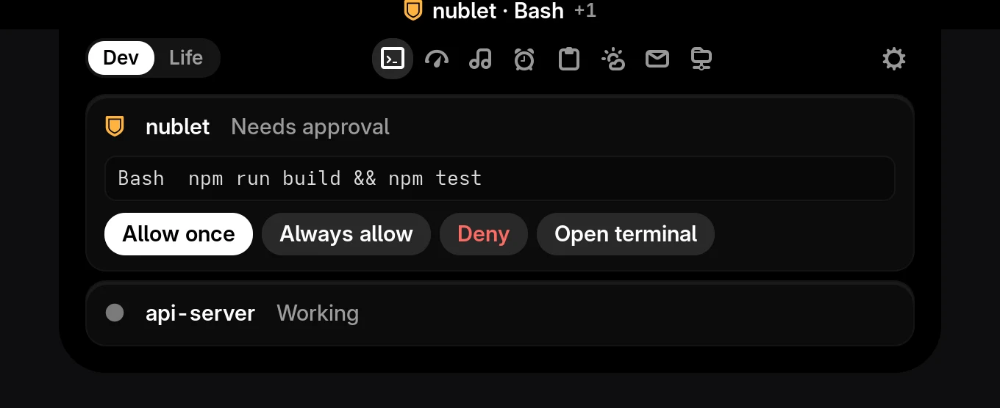
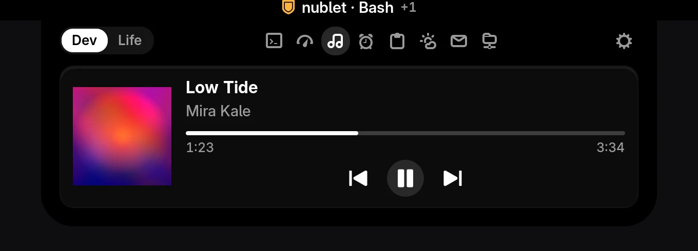
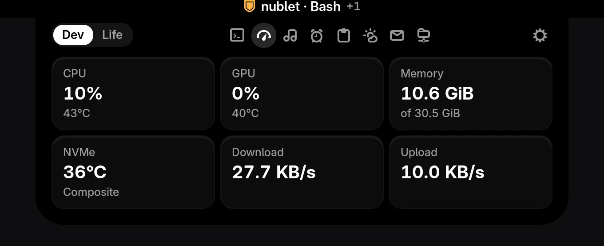
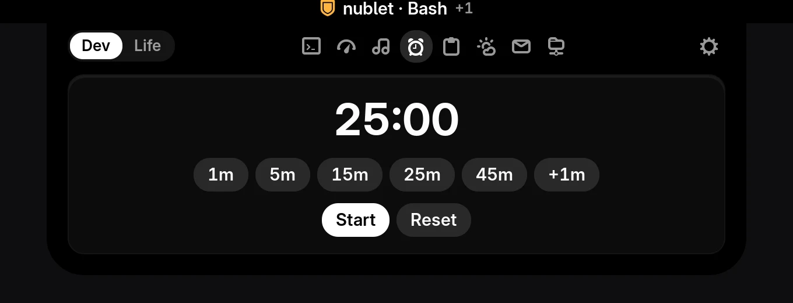

Your top bar, awake.
Nublet turns the GNOME clock into a black pill that shows what is happening and lets you act on it.
Free and open source. GNOME Shell 50 on Wayland.
Approve Claude Code without leaving what you are doing.
When a session needs permission, the pill shows the project and the command. Click it, read the exact command, and answer.
- Allow onceRun this one command
- Always allowSave the rule Claude suggests
- DenyClaude is told and carries on
- Open terminalJump to the session instead
No answer within two minutes and the question goes back to your terminal as usual.

Everything else is one click away.



Also inside: clipboard history, weather, calendar, Gmail and GitHub notifications, grouped into Dev and Life presets.
Install in a minute.
-
Download and install
Grab the zip, then install it from a terminal.
gnome-extensions install --force nublet@kaorii-ako.shell-extension.zip -
Log out and back in
GNOME picks up new extensions when you log in.
-
Turn it on
gnome-extensions enable nublet@kaorii-akoFor Claude Code, open Nublet's settings and press Install under Claude Code. Your other hooks stay untouched.
Runs only on your computer.
No account, no server, no analytics. Read exactly what it touches in the privacy notes.